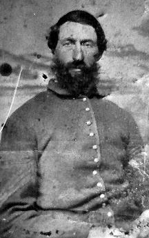

|

NAME: Romanzo Mortimer Buck
BORN: 1833
DIED: 1902
ALLEGIANCE: Union
HIGHEST RANK: Captain
UNIT: 4th Michigan Cavalry, Company C
RECORD: Enlisted in the 4th Michigan Cavalry in 1862.
Promoted to first sergeant the same day. Promoted to second
lieutenant on December 24. Promoted to first lieutenant on
February 22, 1863. Participated in Kilpatrick's raid on
Atlanta in August 1864. Promoted to captain on January 1,
1865. Helped capture Jefferson Davis near Irwinville,
Georgia, on May 10. Mustered out in Nashville on duly 1.
|
|
While he was still a young boy, Romanzo Mortimer Buck
moved with his family from his birthplace of Livingston
County, New York, to the town of Paw Paw in Van Buren
County, Michigan. It was his first taste of travel, and for
a long time it appeared as though it would be his last. With
no pressing reason to leave, Buck remained in Paw Paw for
the next 20 years.
When the Civil War erupted, Buck, brimming with
patriotism, found a reason to travel once again. A
29-year-old dry-goods clerk, he was nearly a decade older
than many other would-be soldiers when he left Paw Paw to
enlist in the Union army. He traveled to Detroit and joined
the 4th Michigan Cavalry just after it formed in August
1862. That same day he was made first sergeant in Company C.
The tintype at left shows him as a quartermaster sergeant
early in December 1862, while his unit was stationed in
central Tennessee.
Attached to the Army of the Ohio, Buck's unit fought in
the Battle of Wilson's Creek, Tennessee, on December 11. Two
weeks later, Buck received his first officer's commission,
becoming a second lieutenant. Over the next few weeks, the
4th Michigan Cavalry fought in the Battle of Murfreesboro,
Tennessee, before being absorbed by the Army of the
Cumberland in January 1863. In late February, Buck was
promoted to first lieutenant.
Near Nashville, Buck contracted chronic diarrhea, a
condition he would suffer through the summer. Even so, he
rode with his unit into the Battle of Chickamauga, Georgia,
in September. The 4th strayed little from Georgia during the
next nine months, and finally, on June 27, 1864, it took
part in an assault on Kennesaw Mountain. Two months later,
the regiment, by then a part of the Military Division of
Mississippi, participated in Brigadier General Hugh Judson
Kilpatrick's raid on Atlanta in August. Buck received a
promotion to captain on January 1, 1865, but during the long
campaign around the Georgia capital, he, like many others in
his unit, contracted rheumatism. Though he was given a
30-day convalescent leave, he never recovered fully from
either illness. (He would be awarded a disability pension of
$8 a month on May 27, 1881.)
As the war drew to a close, Buck helped to pursue and
capture fugitive Confederate President Jefferson Davis near
Irwinville, Georgia, on May 10, 1865. The 4th Michigan
Cavalry was mustered out in Nashville on July 1, and Buck
returned to Paw Paw to become a merchant. He married Ellen
A. Durkee on March 20, 1867, and the couple had a daughter,
Gertrude, on November 7, 1874. With his travels ended, Buck
lived the rest of his life in Paw Paw and died there in
December 1902.
Source: Civil War Times Illustrated
36:7 (February 1998), 80.
|